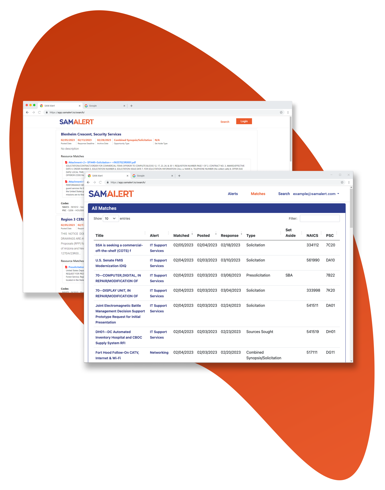

SAM Alert Features
Between SAM Alerts daily polling numbers and our wide array of available
filters, see how we give our clients the fastest route to new opportunities!
filters, see how we give our clients the fastest route to new opportunities!

Search Function
SAM Alert provides advanced search capabilities for government contracts. With SAM
Alert, you can filter based on business set aside, opportunity status, and even filter
on date ranges. SAM Alert also searches within documents to help you find missed
opportunities your competition wouldn't normally be able to find!
Alert Notifications
SAM Alert looks for federal opportunities based on your custom business criteria
10,000 times per day. This makes sure you're the first to know of any new
opportunities for your business. SAM Alert also kicks off email alerts showing you the
opportunity, keyword matches, and the link to the opportunity to help you make quick
informed decisions on bidding activities. Ultimately this saves you and your proposal
team countless hours of searching and combing for new government opportunities!
Pipeline Tracking
SAM Alert helps you manage your pipeline effortlessly. Our platform allows you to
track the progress of your submitted proposals, and evaluate your success rate,
empowering you to make data-driven decisions and optimize your bid strategy.